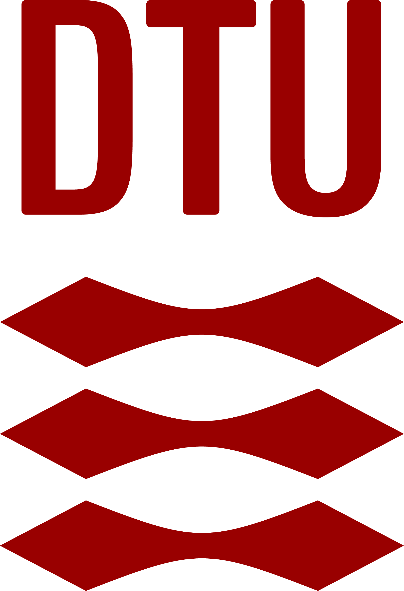

Master Thesis Defense · DTU Compute
Reading the Reader
Adaptive Reading Systems: A Modular Software Architecture
Sachin Baral (s243871@dtu.dk) · Satish Gurung (s243872@dtu.dk)
Supervisors: Per Bækgaard (pgba@dtu.dk) · Ashkan Task (ashta@dtu.dk) · Chaudhary Muhammad Aqdus Ilyas (cmuai@dtu.dk)
DTU Compute · July 2026
10-second welcome only, do not start explaining yet.
Background image: the real two-screen setup (reader + researcher console).
Bridge OUT: "Before the system, let's talk about the person it's for."
The problem
Reading is hard for some readers
For readers with dyslexia or age-related vision loss, text can demand
more than they can comfortably process.
Digital text can reshape itself as it is read, and an eye
tracker can tell when a reader is struggling, so it could
adapt in real time without breaking the reader's flow .
Earn the stakes; keep it human. The key constraint to plant: adaptation
must NOT cost the reader their place / flow. One clean visual, no bullets.
Bridge OUT: "This isn't a new idea in our group, and that's exactly
where the real problem starts."
The programme
A funded, interdisciplinary effort
Reading the Reader is a research programme at DTU Compute, funded by the Novo Nordisk Foundation (about DKK 8 million).
Its goal: help readers with age-related central vision loss and dyslexia through personalised, gaze-driven typographic adaptation.
Brings together
Computer science
Typography
Psychology
Ophthalmology
Serves
Central vision loss (AMD) · Dyslexia
Reading the Reader programme, DTU Compute; funded by the Novo Nordisk Foundation.
SPEAK (P1, ~45s):
"Our reader is not alone. She is one of the cases the Reading the Reader
programme at DTU Compute is built to help. It is funded by the Novo Nordisk
Foundation, around eight million kroner, and it deliberately puts computer
scientists in the same room as typographers, psychologists, and
ophthalmologists. The target is real: people with age-related central vision
loss, and readers with dyslexia. The shared bet is that eye-tracking can
reveal how a person reads and drive typography that adapts to them. Which
means the real user of what we built is the researcher inside this
programme."
BRIDGE: "Here is the concept the programme is chasing."
The concept, and what is missing
Easy to draw, hard to earn
The classifier is the hard part. It is trained on a database of readers, so someone must first produce that data. And the decider can be a human (a researcher) or an AI.
But there is no platform to run the research. Prior prototypes proved the loop, yet were too coupled to swap pieces in and out.
Does wider letter spacing help an AMD reader resume faster? Does a highlight cue cut regressions? Each hypothesis needs different sensing, intervention, and decision logic, and a researcher just wants to plug in a module and gather data.
Concept figure reproduced from the Reading the Reader programme, DTU Compute.
SPEAK (P1, ~60s):
"This is the concept as the programme publishes it. A reader is sensed, the
signal becomes features, a classifier decides, and an intervention adapts the
text, closing the loop. Two things about that classifier in the middle.
First, it is trained on a database of readers, so before you even have a
classifier, someone has to produce that data, cleanly and reproducibly.
Second, the decider does not have to be an AI; in the loop it can be a human,
a researcher, making the call.
Now the gap. To learn what actually helps, a researcher runs many hypotheses,
and each one needs different sensing, a different intervention, a different
decision rule. Does wider letter spacing help an AMD reader resume faster, or
does a highlight cue cut regressions? Different logic each time. Prior
prototypes in the programme proved the loop works, but they were too coupled
to swap those pieces in and out. There was no platform to actually do this
research."
BRIDGE: "So we reframed the problem."
Our approach
We do not build the classifier. We build the platform it presupposes.
A platform that produces reproducible session data, and exposes a seam where a human or an AI decider plugs in, all under researcher control.
The artifact a working, researcher-operated platform
+
The design knowledge principles & trade-offs others can reuse
= the contribution
RQ1 Modularity · RQ2 Real-time sensing · RQ3 Context-preserving intervention · RQ4 Researcher control & reproducibility
SPEAK (P2, ~50s), this is the "is this research?" pre-empt:
"So our approach is deliberately not to supply yet another classifier. We
build the platform the classifier presupposes: it produces reproducible
session data, of the kind such a model would be trained on, and it exposes a
clean seam where a decider, human or AI, plugs in and runs under the
researcher's control.
And that meets a fair challenge head on: is this research, or just an app? We
treat it as Design Science. The contribution is two things together: the
artifact, a working researcher-operated platform, and the design knowledge,
the principles and trade-offs that make it replaceable on any stack.
These four research questions are how we hold ourselves to that, and you are
about to watch the demo answer each one."
BRIDGE (hand off to P1): "So let me show you what the platform actually is."
The platform
Two screens, one loop
STUB · hero: participant reading | researcher console; eye tracker drawn ON the participant↔platform link, not as a box.
JOB: make the HUMAN loop the centre of gravity (supervisors' "put the
user in the centre" note). Participant reads on one screen; researcher
mirrors gaze live + holds controls on the second; the eye tracker is the
sensing INTERFACE between participant and platform.
Bridge OUT: "Behind that experience is one architectural idea."
The architecture, at altitude
Four modules behind stable seams
STUB · full-screen loop: sense → analyse → decide → intervene; external provider seam shown bidirectional (context → / ← proposals). NO code.
JOB: the mental model the demo will confirm. This is where the loop
device is BORN full-screen (afterwards it lives shrunk in the corner).
Each stage = a replaceable module behind a contract. Show the external
decision-provider seam as bidirectional: context streams out, proposals
come back.
Bridge OUT: "Three principles keep those seams stable, that's the
design knowledge, the transferable part."
The design knowledge
Principles that keep the seams stable
STUB · 3–4 principles, one line each.
JOB: this is what makes it a thesis (reusable design claims, not features).
Candidates (from the design register): uniform seam shape + immutable
snapshots; gaze on a separate real-time channel from the control path;
validate-then-commit at a controlled boundary with a position anchor; one
authoritative, replayable session record.
Bridge OUT (THE PROMISE that sets up the demo): "Everything so far is a
claim, independent modules, a preserved reading position, researcher
control, reproducible records. Claims are cheap. So let's watch the
platform actually do all four, live."
Demo
What to watch for
STUB · 5 beat icons tagged to RQs; then cut away to the embedded recording. Persistent beat card + corner loop-spine ride over the footage.
JOB: cash the promise from slide 8, so the demo reads as EVIDENCE not a
tour. Show the 5 beats ~15s, then play the recorded (silent) clips and
narrate live. Beats:
1 Two-screen gaze mirroring (RQ2)
2 Context-preserving intervention + resume-time (RQ3) ← hero moment
3 Advisory mode: approve / override (RQ4)
4 Live module swap: simulated source / external provider (RQ1)
5 Replay a re-imported exported session (RQ4)
Beat 5 exit line -> Slide 10: "every number we're about to show you came
out of records exactly like this one."
What you just saw
The four questions, answered live
STUB · the 4 RQs from slide 5, now each checked, each pinned to its beat.
JOB: close the loop opened on slide 5; re-anchor after ~9 min off-slides.
Bridge OUT (the seam to evaluation): "A demo can be staged, so here is
the measured evidence behind it."
The evidence
Measured, not asserted
STUB · numbers grouped by the 4 stages.
JOB: quantitative proof, still on the same loop diagram.
Modularity: build-enforced boundary; in-process module added in one
registration; 3 external providers connected with zero core changes (one
wrapping a third party's model).
Sensing: 90 Hz, >92% validity, <100 ms budget met on every sample.
Context preservation: reading-resume time ↓ and post-intervention
regressions ↓ with place-keeping on.
Control/reproducibility: whole chapter reconstructed from exported
records alone.
Bridge OUT: "We'll also tell you where it isn't finished, that's the
honest read."
Honest boundaries
What we did not prove
STUB · exactly two shortfalls + the Kalman lesson.
JOB: the maturity slide, name it before you're asked.
1) Automated decision path validated in a single advisory run, not at
campaign scale.
2) Revised context-preserving restore confirmed geometrically, not yet
re-tested with readers, behavioural benefit unconfirmed.
Lesson: line-stabilisation is a hand-tuned hysteresis bias, a
"poor man's Kalman filter" (shares the intuition, not the machinery).
Bridge OUT: "Each of those points forward to a next step."
Where it goes next
A foundation, not an endpoint
STUB · 3 arrows; AI decision provider over the seam leads.
JOB: show the artifact is a base to build on.
1) Run the decision path autonomously at scale over the same provider
seam, where external AI decision-makers plug in (architectural, by
design).
2) A real Kalman filter over the gaze signal.
3) The controlled efficacy study the platform now makes possible.
Bridge OUT: "So, to close."
In one sentence
The adaptive reading loop can be cleanly separated under a real 90 Hz
Tobii loop, giving future studies, including AI-driven ones, a solid
base. You've seen it hold. That's the contribution.
JOB: the sentence you want them repeating in deliberation. Mirror slide 5,
now with the 4 RQs checked and the whole loop shown.
Thank you
Questions
STUB · names, documentation site / repo link, "happy to go deeper." Keep up during Q&A.
JOB: leave the contact/reference up during Q&A. Have backup slides ready
(press to jump). Do not over-talk here.
Backup · B1
Fixation detection: I-AOI (dwell-based)
THE answer to have cold. Dwell/area-of-interest based (I-AOI in
Salvucci–Goldberg), NOT I-DT, NOT I-VT. There is NO velocity threshold.
Report the real dwell-time constants. Both presenters must be able to say
this instantly.
Backup · B2
The line-bias vs. a Kalman filter
Deterministic hysteresis/bias on the current line to reject single-sample
vertical jitter. Shares a Kalman filter's intuition (use prior position),
NOT its probabilistic machinery. A real Kalman filter generalises it, future work. Do not overclaim it "is" a Kalman filter.
Backup · B3
AOI survives an intervention's reflow
"We already solved that concern": word boxes are re-measured from the live
DOM on every mutation / resize / scroll, so the mapping uses fresh
coordinates after a reflow.
Backup · B4
Design decision register (DR1–DR9)
For any "why did you choose X" question: the trade-offs, each against its
driver. DR3/DR7/DR4-fallback trade purity for responsiveness/robustness;
DR1/DR2/DR8 hold separation firm, deliberate, visible.
Backup · B5
Tech stack + Tobii SDK integration
SDK bindings (.NET / Python only) → chose .NET; adapter subscribes to the
gaze callback, normalises to the GazeData contract; licensing / device
detection; Windows-only SDK quarantined behind the sensing port.
Backup · B6
Requirements: build → demo → feedback → refine
The iteration/refinement table: ~5 stakeholder sessions, what was demoed,
feedback, resulting requirement change (e.g. license-free operation,
webcam sensing mode).